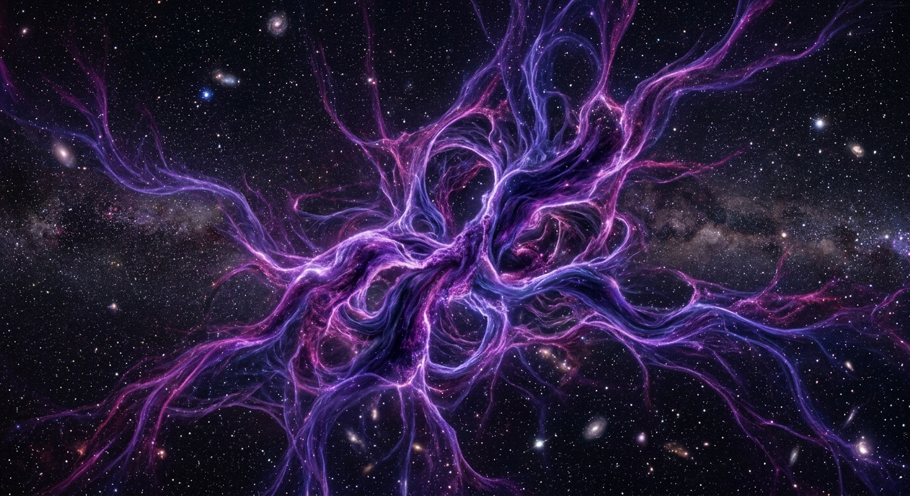

01. Empirical Discovery & Observations

The concept of Dark Matter was formulated to explain solid, unexpected observational facts rather than theoretical speculation. In 1933, Swiss astrophysicist Fritz Zwicky studied the Coma Cluster and found that galaxies rotated so fast that they should fly apart. He calculated that there must be hundreds of times more mass (which he named "Dunkle Materie") holding them together.
In the 1970s, astronomers Vera Rubin and Kent Ford verified this anomaly with high-precision orbital measurements of individual spiral galaxies. They revealed that stars on the extreme outer boundaries revolve around galactic cores just as fast as stars near the center, violating Keplerian mechanics unless a massive, invisible halo encapsulates every galaxy.
Gravitational Lensing Proof
Einstein's General Relativity dictates that mass bends light. When distant starlight sweeps past galaxy clusters, it curves around invisible matter. By tracing these light distortions, astrophysicists can map the precise contours of dark matter halos despite the substance being entirely invisible.